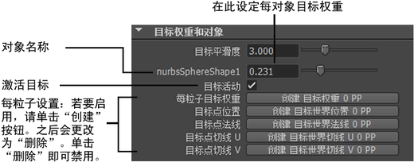

以下内容介绍了如何编辑属性来调整目标在后续粒子和 nParticle 对象中的效果。
基于每对象设定目标权重
将目标添加到对象时，Maya 会将对应的目标权重属性添加到后续粒子对象。目标权重将设定有多少后续对象的所有粒子被吸引到目标。可以在创建目标之前使用“目标选项”(Goal options)窗口设定目标权重，也可以在其后使用“属性编辑器”(Attribute Editor)调整目标权重。
可以将目标权重设定为 0 至 1 之间的值。当该值为 0 时，说明目标的位置不影响后续粒子。当该值为 1 时，会立即将后续粒子移动到目标对象位置。
当该值在 0 和 1 之间时，会导致粒子向目标移动，就像是被弹簧弹到那里一样。值越接近 1，后续粒子将越快达到最终位置。默认情况下，目标权重值为 0.5。
可以在不设定目标权重的情况下，禁用或启用目标对象的效果。使用“属性编辑器”(Attribute Editor)中显示的后续粒子对象属性，禁用与目标对象相关联的“目标活动”(Goal Active)属性。
若要显示“目标选项”(Goal options)窗口，请执行下列操作：
- 选择 >
 。该窗口中的属性会影响用户更改属性设置之后创建的目标。
。该窗口中的属性会影响用户更改属性设置之后创建的目标。
在“属性编辑器”(Attribute Editor)中更改“目标权重”(goal weight)
- 请选择受目标影响的粒子（或柔体粒子）。
- 显示“属性编辑器”(Attribute Editor)。
- 打开“目标权重和对象”(Goal Weights and Objects)区域。
目标权重位于目标对象的名称旁边。更改该权重以应用于整个对象。
（如果更改每粒子的任何设置，则该目标权重将不再适用。）
如果粒子对象具有多个目标对象，则可以查看每个对象的目标权重区域。
提示： 在“通道盒”(Channel Box)中，添加的第一个目标对象的目标权重为“目标权重”(Goal Weight)[0]。第二个目标对象的目标权重为“目标权重”(Goal Weight)[1]，依此类推。
在每粒子基础上设定目标权重
若要更有效地控制后续粒子运动，则可以在每粒子基础上调整目标权重。每粒子目标权重由后续对象的“目标 PP”(Goal PP)属性控制。
每粒子的“目标 PP”(Goal PP)属性用于与粒子相连的每个目标对象。默认情况下，每个粒子的“目标 PP”(Goal PP)属性值均为 1。
设定每粒子目标权重
- 选择后续粒子对象，并显示“属性编辑器”(Attribute Editor)。
- 在“属性编辑器”(Attribute Editor)的“每粒子(数组)属性”(Per Particle (Array)Attributes)区域中找到“目标 PP”(Goal PP)属性。请参见处理每粒子属性，以了解有关如何设置每粒子属性的详细信息。
“目标 PP”(Goal PP)值乘以每对象目标权重，即可创建每个粒子的总目标权重。
例如，如果每对象目标权重为 0.5，且将这一为 0.5 的目标权重添加到某些粒子，则这些粒子的总目标权重为 0.25。如果另一目标对象及其对应的每对象目标权重为 0.1，则粒子的总目标权重为 0.05。
注： 如果在 goalPP 上创建渐变，则渐变将映射至粒子的整个寿命期间，而不会映射至目标对象的曲面。此外，不能根据发射纹理目标。
在每粒子、每对象基础上设定目标权重
对于与粒子系统相关联的每个目标对象，Maya 提供了一个“目标权重”(Goal Weight)值，可以确定粒子被吸引到对象的强度。基本每粒子的“目标 PP”(Goal PP)属性可用来减小目标力对每个粒子的总体效果，但无法在独立于其他粒子对象交互的情况下，用来有选择性地更改特定目标对象对特定粒子的影响。若要进行这类更改，则需使用允许为特定目标对象指定每粒子目标权重值的动态属性。在粒子系统内创建对一个目标对象的变化目标吸引力时，这些属性十分有用。
动态属性 goalWeightNPP 可为 n 个目标对象提供每粒子目标权重。目标对象将根据其在粒子系统的稀疏 goalGeometry 数组中的索引进行编号。这样可以确保在粒子系统添加或移除目标对象时保留每粒子目标权重。如果未找到特定目标对象的每粒子目标权重，则该对象的标准目标权重值（由粒子“属性编辑器”(Attribute Editor)中对象的名称旁边的滑块指定）将应用于所有粒子。
设置每粒子目标权重属性
- 确保已为吸引粒子的对象创建目标。（）。详细信息请参见创建目标。
- 在“组件”(Component)模式中，选择要编辑每粒子目标权重的单个粒子。
- 在“属性编辑器”(Attribute Editor)的粒子系统节点中，转到“目标权重和对象”(Goals Weights and Objects)区域，并为所需的目标对象单击“创建 goalWeightNPP”(Create goalWeightNPP)按钮。
- 执行下列操作之一以打开“组件编辑器”(Component Editor)：
- 转到“每粒子(数组)属性”(Per Particle (Array)Attributes)区域，在对应的“GoalWeight NPP”属性旁边的空框上单击鼠标右键，并从弹出菜单中选择“组件编辑器”(Component Editor)。
- 选择“窗口 > 常规编辑器 > 组件编辑器”(Window > General Editors > Component Editor)。
提示： 如果“goalWeight”列未显示，请在“组件编辑器”(Component Editor)菜单中选择“选项 > 隐藏零列”(Options > Hide Zero Columns)（以显示零列）。
直到播放模拟为止，这些值将一直为零。
- 播放模拟。也可以在某些帧中停止，并在“组件编辑器”(Component Editor)中编辑“目标权重”(goalWeight)值。
禁用每粒子的目标权重属性
- 在“属性编辑器”(Attribute Editor)中的粒子系统节点中，转到“目标和权重”(Goals and Weights)区域，并为所需的目标对象单击“删除 goalWeightNPP”(Delete goalWeightNPP)按钮。
现在，粒子将具有为系统、而不是为特定粒子定义的目标权重。
检查每粒子的目标点数据
创建目标对象之后，可以将多个每粒子动态属性添加到粒子节点。粒子系统被吸引到目标对象时，这些属性将由每个目标对象中吸引每个粒子的特定点的数据加以填充。可以在“组件编辑器”(Component Editor)的“粒子”(Particles)选项卡中查看该信息。尽管无法更改该信息（可以对其编辑，但一旦重新运行模拟之后将会替换），但您可能会发现它对运行时粒子表达式十分有用。例如，可以更改粒子颜色，使该颜色在接近目标对象时增强。
由于粒子系统可能会拥有多个目标对象，因此这些新属性将会编号，以指示其数据对应的目标对象。目标对象将根据其在粒子系统的稀疏 goalGeometry 数组中的索引进行编号。该策略可以确保在粒子系统中添加和移除目标对象时，这些每粒子属性不会更改其意义。
许多不同类型的对象均可用作 Maya 中粒子系统的目标对象，但只能为 NURBS 曲面和多边形曲面目标对象生成正确的切线和法线。NURBS 曲线、用作目标对象的其他粒子系统或其他基于控制点的基本体不会生成正确的法线和切线。
设置目标点数据的每粒子属性
- 确保已为吸引粒子的对象创建目标。（）详细信息请参见创建目标。
- 在“组件”(Component)模式中，选择要查看其目标点每粒子属性的单个粒子。
- 在“属性编辑器”(Attribute Editor)的粒子系统节点中，转到“目标权重和对象”(Goals Weights and Objects)区域，针对所需的目标对象，单击所需“目标点”(Goal Point)属性（“位置”(Position)、“法线”(Normal)、“切线 U”(Tangent U)、“切线 V”(Tangent V)）旁边的“创建”(Create)按钮。
- 执行下列操作之一以打开“组件编辑器”(Component Editor)：
- 转到“每粒子(数组)属性”(Per Particle (Array)Attributes)区域，在对应的“goalWorldNPP”属性旁边的空框上单击鼠标右键，并从弹出菜单中选择“组件编辑器”(Component Editor)。
- 选择“窗口 > 常规编辑器 > 组件编辑器”(Window > General Editors > Component Editor)。
注： 如果“goalWorld”列未显示，请在“组件编辑器”(Component Editor)菜单中选择“选项 > 隐藏零列”(Options > Hide Zero Columns)（以显示零列）。
直到播放模拟为止，这些值将一直为零。
- 播放模拟。也可以在某些帧中停止，并在“组件编辑器”(Component Editor)中查看“goalWorld”值。
禁用目标点数据的每粒子属性
- 在“属性编辑器”(Attribute Editor)的粒子系统节点中，转到“目标和权重”(Goals and Weights)区域，并针对所需的目标对象单击“目标点”(Goal Point)属性旁边的“删除”(Delete)按钮。
为目标指定 NURBS 或多边形 UV 位置
使用 NURBS 或多边形曲面的 CV 作为目标时，后续粒子会直接移至 CV。但是，CV 通常定位在较远或异常的位置。通过添加和设定后续粒子对象的形状节点的预定义“goalU”和“goalV”属性，可以使粒子更直接或平均地移至曲面。这些每粒子属性将设定粒子被吸引到 NURBS 或多边形曲面上的精确位置。
还可以添加和设定预定义“goalOffset”属性，从而更便捷地达到类似的结果（请参见下面的指定目标位置的偏移）。
如果后续对象具有多个目标对象，则每个目标对象均可使用相同的每粒子 U 和 V 值。
如果这些属性未在对象中指定有效位置，则系统将使用曲面或曲线上的最近位置作为目标位置。如果某位置超出对象的 U 和 V 范围，或者位于已修剪的曲线或曲面的一部分中，则该位置无效。若要确保使用最近点，请将值指定为 -1。
有关添加属性的详细信息，请参见将动态属性添加到 nParticle。可以使用表达式、MEL 脚本或其他属性编辑技术来设定这些属性的值。
使用多边形网格目标对象
当每粒子的“goalU/goalV” 属性应用于多边形网格目标对象时，应指定粒子将被吸引到目标网格曲面上的特定点。“goalU/goalV”值、目标对象及其 UV 坐标的动画完全受到支持。。
对于每个多边形网格对象，将出现“UV 集”(UV Set)控件。使用该控件，您可以在确定给定了“goalU/goalV”值的粒子的目标位置时，决定要使用哪个 UV 集。
由于多边形网格对象上的 UV 映射是任意的，因此给定的“goalU/goalV”对可能会映射到目标曲面上的多个点中。如果某粒子存在多个潜在目标点，则 Maya 将选择距该粒子在世界空间当前位置最近的点作为目标位置。该结果将在每一帧中重新计算，因此，如果粒子移至靠近其他某一可能的目标位置，则该粒子将吸引至该目标位置，而不是原始目标位置。
同样，对于特定的粒子，对象中也有可能没有任何点与指定的“goalU/goalV”值匹配。在这种情况下，系统将使用 UV 空间中距指定目标点最近的网格顶点。该结果将在每一帧中更新。
指定目标位置的偏移
如果将预定义“goalOffset”属性添加到后续粒子对象的形状节点中，则可将偏移设定为目标对象的世界空间位置。例如，如果使粒子朝向由曲线的 CV 组成的目标移动，则该偏移将指示粒子移至每个 CV 及 goalOffset。“goalOffset”属性是每粒子向量属性。
有关添加属性的详细信息，请参见将动态属性添加到 nParticle。可以使用表达式、MEL 脚本或其他属性编辑技术来设定该属性的值。